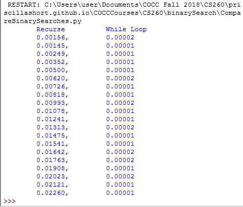
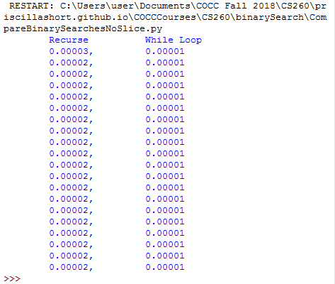

Binary Search
Big-O Efficiency: O(log n)
A binary search will start by examining the middle item. If that item is the one we are searching for, we are done.
If it is not the correct item, we can use the ordered nature of the list to eliminate half of the remaining items.
If the item we are searching for is greater than the middle item, we know that the entire lower half of the list as
well as the middle item can be eliminated from further consideration. The item, if it is in the list, must be in the upper half.
We can then repeat the process with the upper half. Start at the middle item and compare it against what we are looking for.
Again, we either find it or split the list in half, therefore eliminating another large part of our possible search space.
Figure 1 shows how this algorithm can quickly find the value 54.
Figure 1

Below is a comparison between the efficiency of the recursive binary search function vs the binary search using a while loop.
Description of Excercise:
Use the binary search functions given in the text (recursive and iterative).
Generate a random, ordered list of integers and do a benchmark analysis for each one.
What are your results? Can you explain them?
Answer:
The slice operator in Python, used in the recursive version is actually O(k).
This means that the binary search using slice will not perform in strict logarithmic time, which makes it slower in its current state.
See output of code below.

If the recursive version of the binary search is implemented by passing start and end values for the list instead of slicing the list. The recursive binary search becomes more efficient and can truly operate as a log n function
Description of Excercise:
Implement the binary search using recursion without the slice operator.
Recall that you will need to pass the list along with the starting and
ending index values for the sublist. Generate a random, ordered list of
integers and do a benchmark analysis.
See output of code below.
